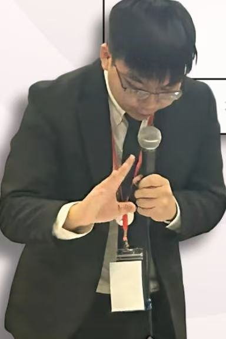
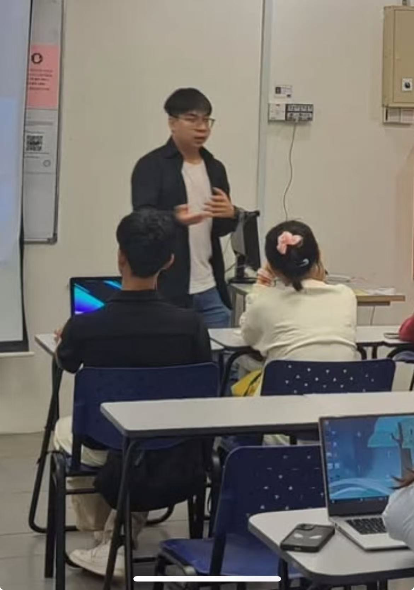
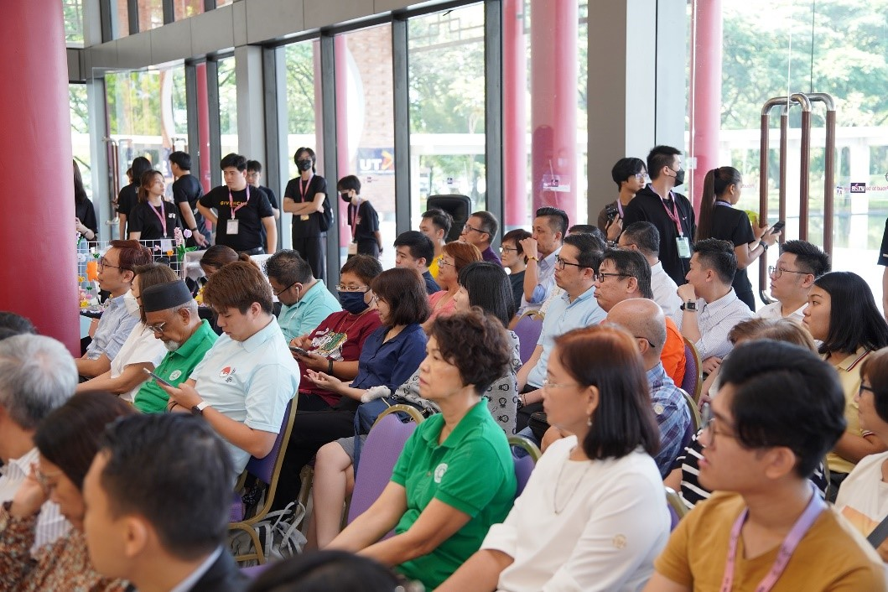

TEDxUTAR Kampar
TEDx speaker
Public talk: Fake Optimism, True Resilience, presenting resilience through a practical framework for confronting fear and reframing adversity.
Watch the talkEvents and experience
Speaking, competition participation, programme work and service records alongside engineering study.
Selected public record
TEDxUTAR Kampar
Public talk: Fake Optimism, True Resilience, presenting resilience through a practical framework for confronting fear and reframing adversity.
Watch the talkDebate
2019 Hwa Yi Invitational English Debate Competition champion. Later debate records include competition preparation, research, questioning and speech material from university debate work.

UTAR Makers Club
Chairman in 2025 and auditor in 2026. The 2025 term recruited more than 20 new members and ran a workshop attended by over 30 participants.

The workshops made sensors playable. Participants built and modified short games instead of stopping at a sensor reading.
Living Life and Death Expo
Organised and managed the university-wide expo on life and death themes, supporting more than 1,000 attendees and coordinating 15 volunteers.

UTAR Soft Skills Festival
Prepared sponsor outreach material, sponsorship letters and tracking records for the 2024 festival.
International Youth Development Conference
Event executive-committee record included in the professional resume.
View related programme recordSunshine Volunteering Teacher
Taught and mentored refugee students through English lessons and active classroom engagement.